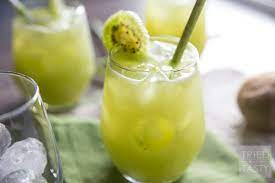

Kiwi Agua Fresca

Ingredients
7 or 8 ripe kiwis, peeled and quartered
6 to 8 cups cold water, or as desired
sweetener, optional and to taste*
Instructions
To the canister of a blender, add kiwis, 6 cups water, optional sweetener, and blend on high speed until kiwis have broken down, about 30 seconds, or as long as desired.
Taste to check sweetness level and make any adjustments if necessary. If you prefer a thinner beverage, add additional water to thin out and blend for a few seconds.
Pour into glasses and serve immediately. Optionally garnish with a few thinly sliced kiwi on top.
Drink will keep airtight in the fridge for up to 4 days.